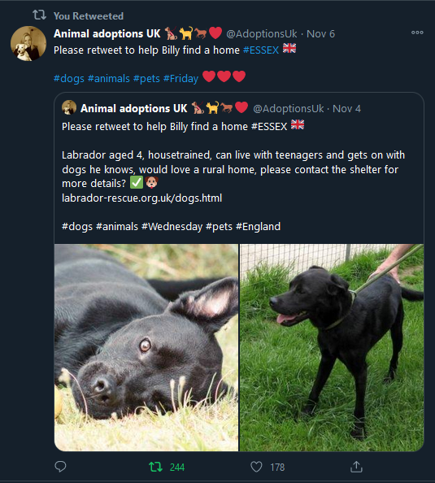
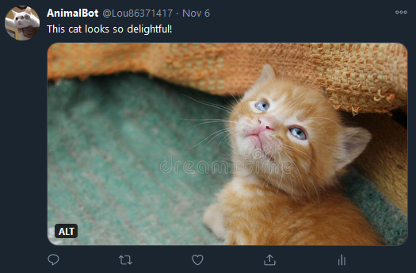

My Projects
Aframe Project: "Birthday Table"
360° Viewer:
Twitter-bot Project: "Animal Bot"

Introduction:
Our “AnimalBot” is made for people who like animals and pets. The Bot retweets posts
including pet pictures, and it also posts a picture of an animal with a caption,
periodically.
What does it do?
Our Bot does two things in general:
1) Retweeting posts includes keyword #pets

The bot will retweet one of the top ten most recent tweet with the #pets every 5
hours. The bot will search through the posts with keyword #pets, and select one
of the top ten most recent tweets at random, and retweet it.
2) Posting pet picture with caption

The bot will post one of 24 possible pictures of a pet with a semi-randomized
caption every 24 hours (one picture a day). The pictures are from our source
folder. The function generates a semi-randomized caption and alternative text
based on a random number generator.